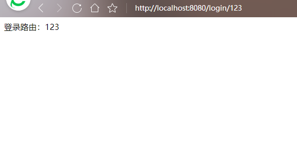

路由表示应用程序端点 (URI) 的定义以及响应客户端请求的方式。它包含一个请求方时（methods）、路径（path）和路由匹配时的函数（callback）;
app.methods(path, callback);
Express方法源于 HTTP 方法之一，附加到 express 类的实例。它可请求的方法包括：
get、post、put、head、delete、options、trace、copy、lock、mkcol、move、purge、propfind、proppatch、unlock、report、mkactivity、checkout、merge、m-search、notify、subscribe、unsubscribe、patch、search 和 connect。
Express路径包含三种表达形式，分别为字符串、字符串模式、正则表达式
app.get("/login",function(req,res){
res.send("heng... women");
})
此路径地址将与/login匹配
app.get("/ab+cd",function(req,res){
res.send("heng... women");
})
此路径地址将与acd和abcd匹配
app.get(/^a/,function(req,res){
res.send("heng... women");
})
匹配开头必须是a的路径
const express = require("express");
var app = express();
app.get("/",function(req,res){
res.send(`<h1>主页</h1>`);
});
app.get("/login",function(req,res){
res.send(“登录页面”);
});
app.get("/registe",function(req,res){
res.send(“注册页面”);
});
app.listen(8080);
输入http://127.0.0.1:8080/login和http://127.0.0.1:8080/registe都能进入不同路由。
动态路由使得我们不必向之前那样每一个路由路径都必须亲自设定，大大提高了开发上的效率，通过下面代码，在自定义路由之后，可通过req.params来获取路由信息：
const express = require("express");
var app = express();
app.get("/",function(req,res){
res.send(`<h1>oh no</h1>`);
});
app.get("/login/:aid",function(req,res){
res.send(req.params);
});
app.listen(8080);

就像你看到的那样，aid标识已经被express动态捕获，此后通过设置不同路由即可访问不同的后台数据。